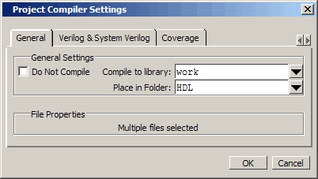

If you
do not place files into a folder when you first add the files to
the project, you can move them into a folder using the Project Compiler
Settings dialog box.
Procedure
Move tcounter.v and counter.v to
the HDL folder.- Select
both counter.v and tcounter.v in
the Project window.
- Right-click
either file and select Properties.
This opens
the Project Compiler Settings dialog box (Figure 1), which allows you to set a variety
of options on your design files.
Figure 1. Changing File Location
- Click
the Place In Folder drop-down arrow and select HDL.
- Click OK.
The selected
files are moved into the HDL folder. Click the ’+’ icon next to
the HDL folder to see the files.
The files
are now marked with a ’?’ in the Status column because you moved
the files. The project no longer knows if the previous compilation
is still valid.